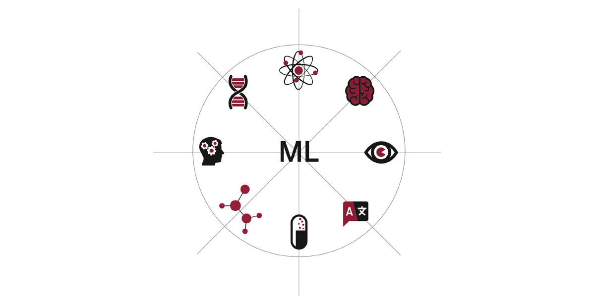

One of the leading E-Commerce Company would like to get marketing insights from the
data to
define marketing strategies going forward. Also, expecting to build an analytical
dashboard
monitor various KPI’s & business metrics.


Creating reports at Company level with details like : Total number of complaint,
Timely response to a complain,Delay in closure of Complains,Monthly trends of no. of
Complains

A retail store would like to understand customer behaviour using their point of sale
data. The data set we will be using fot the excercise comprises of three tables:
Customer,Transactions and Product Category.

Our Client is a leading retailer of sports equipments across the globe.Product Manager
of the company wants to analyze combined revenue generated in year 2014 across all the
countries.

In this project, we worked on a text clustering problem wherein we had to
classify/group the Netflix movies and shows into certain clusters such that the shows
within a cluster are similar to each other.
In This project our task was to build network intrusion detection system to detect
anaomalies and attacks in the network.
A women clothing e-commerce company would like to analyse the customers
behaviour on basis of reviews submitted on the website.